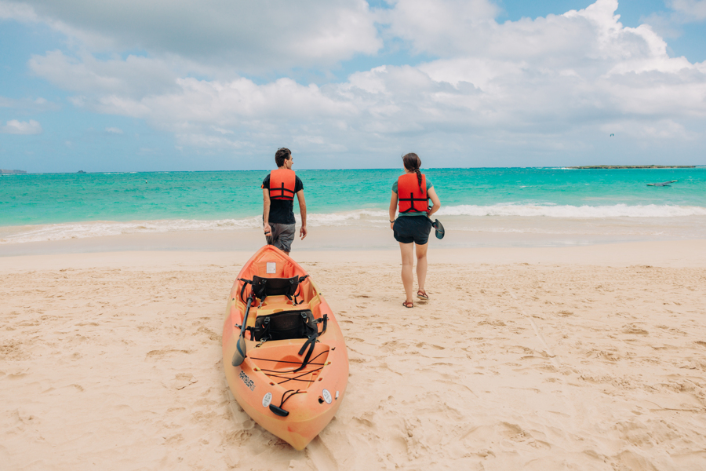

モクルア諸島セルフガイドカヤックアドベンチャー
カヤックでカイルアの双子島へ: スリル満点の冒険
絵のように美しいラニカイ ビーチのすぐ沖には、カイルアのツイン アイランドとしても知られる、息を呑むようなモクルア諸島があります。ビーチからは素晴らしい景色を眺めることができますが、パドルアウトして間近で体験すると、本当の魔法が起こります。カヤックで島々を訪れると、隠れた潮だまりを探索したり、有名なクイーンズ バスを訪れたり、オアフ島の風上海岸のパノラマの景色に浸ったりできる、他に類を見ない冒険が楽しめます。このガイドでは、モクルア諸島への忘れられない冒険に出かける前に知っておくべきことをすべて説明します。

カヤックのレンタルの輸送
アドベンチャー ハブに到着したら、フレンドリーなアドベンチャー ガイドが、水上での 1 日の外出に必要な装備をすべて揃えるお手伝いをします。カヤックをビーチまで運ぶには 2 つのオプションをご用意しています。
- 車両の使用: フォームパッドやルーフラック、ストラップなど、カヤックを車両の上に運ぶために必要なものはすべて提供されます。私たちのガイドは、すべてのギアを簡単に積み降ろしする方法を説明し、プロセスを迅速かつ手間なく行うことで、水上での探索にもっと時間を費やすことができます。
- 電動自転車レンタルの利用: 車をお持ちでない場合でも、問題ない！カヤックトレーラーを備えた当社の電動自転車を使用すると、レンタルしたものをビーチに持っていくのに便利でスリル満点の方法です。レンタルカヤックを安全かつ確実に運びながら、駐車スペースの奪い合いを避け、カイルア タウンの景色を楽しみながらドライブをお楽しみください。
期待されること
You’ll begin by navigating over to Kailua Beach Park and parking your vehicle or locking up your e-bikes. From there, you will carry your kayaks over Ka’elepulu Canal, located to the right of the parking lot. Begin your journey by entering the canal for a brief paddle to get to the beach. The canal’s calm waters are the perfect place to practice paddling and build your confidence before you head out to the ocean! When you’re ready, it’s just a brief paddle to where the canal meets Kailua beach. From there, drag your kayak over the sand and into the ocean waters. It is easiest to board the kayaks if you walk them out until you are waist deep and then hop in–that way you won’t be battling the waves as much.
From there, you begin the paddle out to the Mokulua Islands, which takes about an hour. As you paddle, stay in the shallows between the shoreline and the reef until you are in front of the Mokulua Islands. You will land on the sandy shore facing Lanikai Beach and secure your kayak out of the water. It is only permitted for visitors to land on Mokulua Nui, the larger of the two islands.

島を楽しむ
Once you arrive on the Island, take a look around! The Mokulua Islands are a seabird sanctuary, and there is lots to explore! Check out the hidden tidepools with sea creatures lying inside, walk the perimeter of the island and take in the stunning views, and even take a dip in the famous “Queen’s Bath” located on the backside of the island. As you explore you’ll be treated to views of Oahu’s windward coast line and the turquoise waters and white powder-soft sand of Lanikai Beach. You can even snorkel off the shore of the island and discover tropical fish, reef, and if you’re lucky you may even spot sea turtles gliding by!
The Mokulua Islands are a wildlife animal sanctuary. Visiting the islands allows you to appreciate these animals and help preserve them. Because of this, wildlife sanctuary permits are required when landing on Mokulua Nui, which we include in your rental so that you don’t have to worry about getting them on your own. The Mokulua Islands are known for housing resting Monk Seals and seabirds. Help respect these animals by staying at least 50 feet from Monk Seals and do not attempt to touch or feed them. These large animals can be dangerous if approached.


冒険の終わり
島での冒険が終わったら、カヤックを海に戻し、島に行くときに漕いだのと同じコースを進みます。運河を通って車や自転車に戻った後、すべてのギアを積み込んでアドベンチャー ハブに戻り、次の冒険に出発する前にフレンドリーなガイドがギアの降ろしをお手伝いします。
その後にやるべきこと
カイルアでの冒険を続ける方法はたくさんあります。私たちのお気に入りのいくつかをチェックしてください:
- 食欲をそそるカルア ポーク料理とミルクセーキで知られるコノズ、アサイー ボウルとスムージーのサンライズ シャック、ボストン スタイル ピザのボブズ ピッツェリアで軽食をとりましょう。
- Hike to the Lanikai Pillboxes Lanikai Pillbox Hike Adventure Guide
- Bodyboard at Kalama Beach Kalama Beach Bodyboarding Adventure
予約する
Experience the Mokulua Islands for yourself with our self-guided kayaking tour! Visit this link to make your booking today!
ライフガード認定の専門ガイドによる経験の向上に興味がありますか?モクルア諸島へのガイド付きカヤック ツアーをご覧ください。